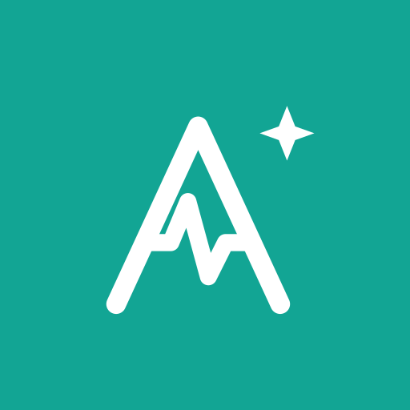

Coach IA d'entraînement pour cyclistes — planification, charge d'entraînement et recommandations adaptées à ta forme, connecté à Strava, Intervals.icu et Health Connect.
Une séance recommandée chaque jour, adaptée à ta charge, ta fraîcheur et ton profil de puissance.
CTL, ATL, TSB et TSS suivis automatiquement depuis Strava et Intervals.icu.
Construis ton plan d'entraînement sur plusieurs semaines et suis ta progression.
Strava, Intervals.icu et Health Connect (sommeil, fréquence cardiaque au repos).